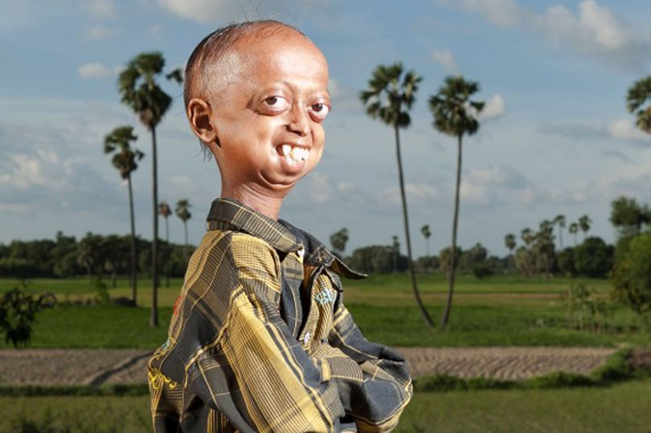
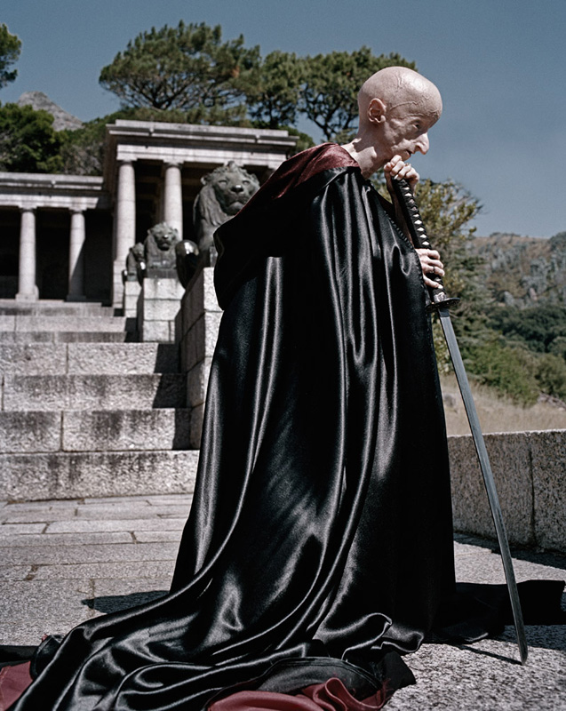
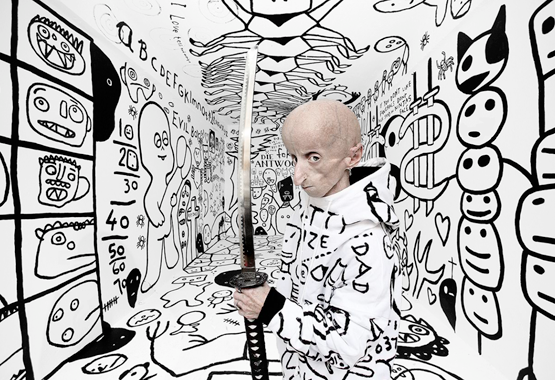
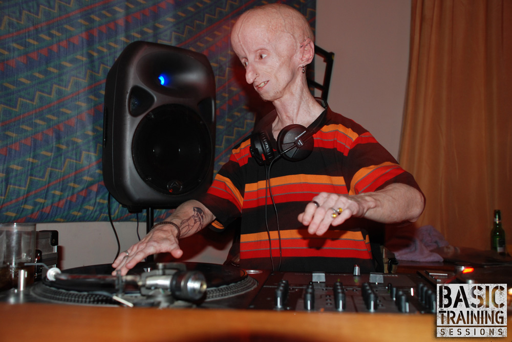

Ali Hussain Khan
Originaire de la région de Bihar en Inde, Ali Hussain Khan souffre du syndrome de Hutchinson-Gilford.
A seulement 16 ans, Ali est prisonnié d'un corp qui en parait 110.  Ali est un cas très interessant à "etudier" puisque ses parents Nabia et Razia sont à l'origine de 6 enfants atteint de la progéria; Ali est le dernier survivant. Sur seulement une centaine de cas dans le monde Nabia et Razia avec leurs 6 enfants malade defient toutes les statistiques.
{kind=link}
Un de leurs fils et trois de leurs filles en sont décédés. Un cinquième enfant, un bébé, est mort lui aussi quelques jours après sa naissance. La progéria n’a pas été immédiatement diagnostiquée chez les enfants du couple, les médecins indiens n’en avaient même jamais entendu parler. « Si un docteur nous avait dit que nos enfants souffraient d’une maladie génétique, nous aurions cessé d’en avoir », declarent les parents. Le couple, à l’origine cousins germains, a mis au monde deux filles depuis, en bonne santé.
Aujourd'hui Ali est donc le seul survivant, une solitude qui lui pèse. Il sait que aucun traitement appropriement dit existe mais il garde espoir:
« J’aimerai beaucoup rester en vie et j’espère qu’il existe un remède contre ma maladie, quelque part. Je n’ai pas peur de mourir mais mes parents ont déjà beaucoup souffert et j’aimerais vivre pour eux. Je ne veux plus qu’ils soient accablés de chagrin comme avant. » dit-il
Léon Botha
 Leon Botha, né le 4 juin 1985 au Cap en Afrique du Sud et mort le 5 juin 2011 dans la même ville suite a une embollie pulmonère, est un artiste peintre sud-africain, photographe et disc jokey occasionnel, atteint de progéria. Il est mort à 26 ans, n record de longévité pour une personne atteinte de cette maladie de vieillissement accéléré.
{kind=link}
Ses jours étaient comptés, mais Leon Botha n'a pas attendu pour laisser une empreinte de son passage dans ce monde : tourné vers la peinture et la photographie après son bac, il exposait deja son travail.
Il est même modèle et pose pour des artistes sans honte : "Je suis un esprit, avant tout, tout comme vous. Et puis je suis un être humain, et cette partie de l'être humain, c'est le corps, qui souffre d'une maladie." raconte t'il.
Botha à été opéré du coeur en 2005 en vue de prévenir des risques de crise cardiaque liés à une artériosclérose induite par le progéria.
C'est après un buzz international en tant que Dj que Léon Notha s'est etteint surpassant l'esperence de vie promise aux malades.


{kind=link}
{kind=link}